February Papers: Longer RoPEs & Better Quantisation
Improving LLM inference is a key research topic at the moment, and something we're particularly interested in at Graphcore because of its hardware implications. February saw several developments in this area, focussing on both the efficiency and capabilities of LLM inference.
Microsoft contributed two of this month's papers, with the first showing a method of extrapolating to long sequences, and the second an approach to storing 6-bit weights. Researchers from Cornell University have gone further and pushed the limits of quantisation to as few as 3 bits for inference. Apple also introduced their new speculative streaming method, which makes efficiency gains by asking the model to predict multiple future tokens, improving over the popular speculative decoding technique.
We hope you enjoy this month's papers as much as we did! If you have thoughts or questions, please reach out to us at @GCResearchTeam.
LongRoPE: Extending LLM Context Window Beyond 2 Million Tokens
The key idea
Language models are generally limited to performing well only on sequence lengths seen during training. Building upon this observation and prior work, this paper introduces a method for greatly extending the context length of pretrained language models using RoPE embeddings through a sequence of relatively inexpensive fine-tuning steps.
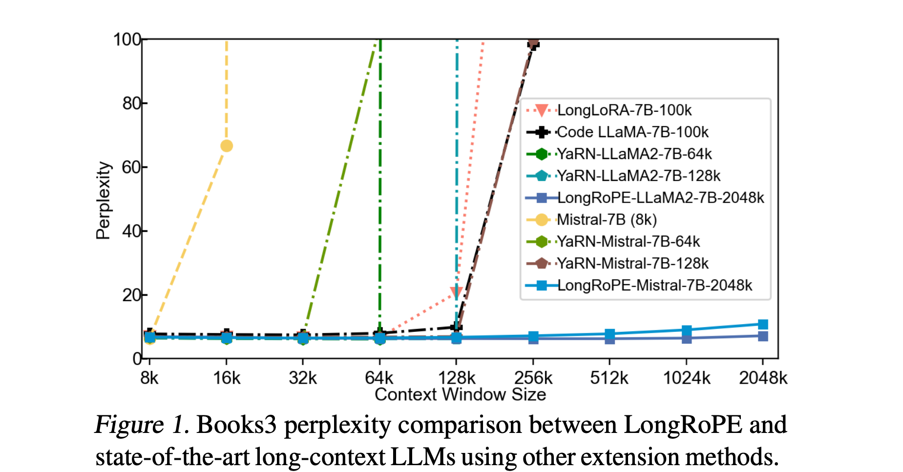
Background
Rotary Position Embeddings
Widely used open-source language models such as Mistral-7B and Llama2-7B use rotary position embeddings (RoPE) and are trained on sequences containing up to 4k tokens. Although longer sequences can in theory be easily encoded and processed by the models, the performance tends to quickly deteriorate as the sequences become longer than the ones observed during training.
RoPE encodes the positions within the sequence by dividing each (query and key) vector's dimensions into consecutive pairs and applying a 2D rotation to each pair. The angle rotated is proportional to the position id (ensuring that the query-key dot product is a function of the relative distance between the tokens), and is scaled differently for each dimensional pair: initial dimensions are rotated more (capturing high frequency dependencies), while the latter dimensions are rotated less (lower frequency dependencies).
Prior approaches
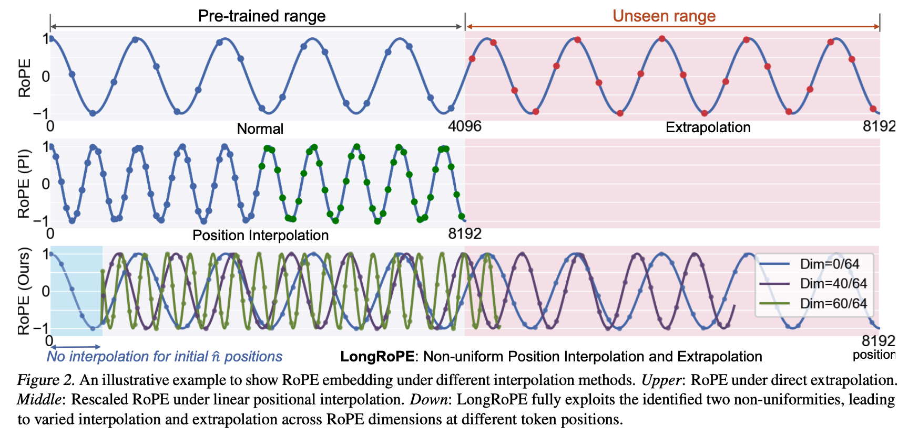
Several approaches have been previously proposed to address the issue of generalising past trained sequence lengths:
- The simplest approach is interpolation, i.e., compress the sequence ids to fit within the trained length. This can be problematic as the ids are "squeezed" into a small range, proving especially difficult for the high frequency dimensions.
- "NTK-aware" methods address this by scaling the sequence differently for each RoPE frequency, squeezing the high frequencies less than the lower ones.
- YaRN improves this by further classifying the RoPE frequencies and applying a different approach to each group: high frequency dimensions are not interpolated (not compressed to the training range), low frequencies are only interpolated (always compressed), while the frequencies in between follow a similar scaling rule as the "NTK-aware" method.
Their method
Utilising the observations from YaRN, the authors propose further refinements:
- Find the best scaling factor for each RoPE frequency through an evolutionary search algorithm, instead of the empirically chosen factors in YaRN.
- As initial tokens within the sequence tend to have a large effect on the output (as observed e.g. in StreamingLLM), the authors additionally do not perform the interpolation of RoPE embeddings for an initial token window.
Procedure
The authors note that just finding the best scaling factors without fine-tuning was able to extend the sequence length up to 32k, but incurred performance degradation for longer sequences. Therefore, in order to stretch the context window length to 2M tokens, the authors follow a sequence of steps:
1) Find the appropriate scaling factors for 128k through the evolutionary search, then fine-tune the model using 128k sequence length examples (400 steps). 2) Find the scaling factors for 256k, then fine-tune the model using 256k sequence length examples (600 steps). 3) Find the scaling factors for 2M without fine-tuning. 4) As the extended model can suffer performance degradation on the original sequence lengths, perform an additional scaling factor search for short sequences, then dynamically adjust the factors during inference based on context length.
Model perplexity is used throughout each step to guide the search/fine-tuning.
Results
The authors test the method using three evaluation setups: long-context perplexity, accuracy on a synthetic passkey retrieval task (find a passkey in a long unrelated text), as well as downstream tasks on short-context lengths to evaluate degradation on the original sequence length.
Main observations
- Perplexity tends to be better compared to other extension methods, and decreases as sequences grow up to 256k.
- Passkey retrieval accuracy is good, falling to about 90% for 1.8M sequence length.
- The performance on original short-context downstream task does degrade, sometimes significantly (46.6% → 39.6% on MMLU with Llama).
Takeaways
As state-of-the-art models such Gemini 1.5 are starting to showcase capabilities to process extremely long sequences, methods for extending the sequence length of short-context language models remain exceedingly important.
The paper provides useful insights into extending context window length of language models, confirming the importance of using different RoPE frequency scaling factors introduced in previous approaches such as YaRN and "NTK-aware" scaling, but noting that the previously used factors are not necessarily optimal. Although the method is able to extend the context window to an impressive 2M tokens length, the model still tends to perform worse on the original shorter sequence lengths, implying that further improvements may be possible.
Understanding the proper steps for robustly extending the context length of models, as well as the comparative pros and cons of such techniques vs retrieval-based approaches, remain essential research questions in the LM community, highlighting the importance of contributions such as LongRoPE.
QuIP#: Even Better LLM Quantization with Hadamard Incoherence and Lattice Codebooks
The key idea
Enable extreme compression by transforming weights to something less heavy-tailed before quantising with a set of spherical (rather than grid-like) codes!
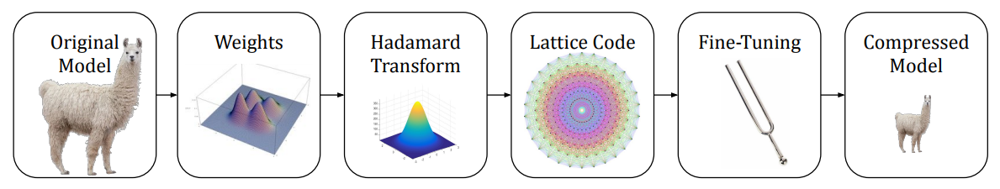
Background
LLM token generation is memory-bandwidth bound, i.e. limited by the rate at which model state can be read. This means that any reduction in #GB to store model weights and KV cache can increase #tokens/sec.
Widely adopted LLM compression techniques typically stop at 4-bits since this hits a sweet spot with
- very little degradation in downstream task performance
- element-wise codecs that are straightforward to parallelise and optimise on modern hardware.
One reason these techniques struggle to quantise to fewer bits is that the tails of LLM weights and activations distributions affecting the majority of computation become increasingly susceptible to quantisation error. To address this, the authors previously proposed QuIP in which weights are transformed to have a less heavy-tailed distribution. Here they present two key improvements to QuIP.
Their method
QuIP is comprised of two key components:
-
A transform using orthogonal matrices \(U\) and \(V\) used to convert weights \(W\) and layer activations \(x\) such that \(\tilde{W} = U^TWV\) and \(\tilde{H} = V^THV\) where \(H\) is a proxy Hessian of layer activations \(H=\mathbb{E}[xx^T]\).
-
A quantisation algorithm \(Q\) that maps \(\tilde{W}\) to some quantised space in such a way that minimises quantisation error of outlier activations.
Which you can summarise with:
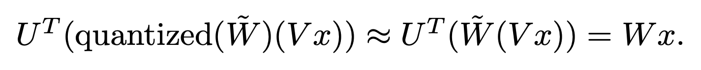
QuIP# improves both the method for generating \(U\) and \(V\) and the quantisation algorithm \(Q\).
\(U\), \(V\) generation: To exploit GPU parallelism and decrease bounds on outlier features, the authors propose using a Randomised Hadamard Transform (RHT), in which U and V can be represented as Hadamard matrices along with randomly generated sign flips of weight columns. They prove that the largest singular values of transformed weight matrices scale logarithmically with the size of the weight matrices, meaning lower probability of outliers in weights needed to be quantised.
Q algorithm: As with other recent methods (e.g. AQLM, GPTVQ), the authors explore vector quantisation as a means to provide a high-density quantised space to map uncompressed points onto. The key idea behind vector quantisation is that you can define arbitrary prototypes to discretise a multi-dimensional space, rather than regular grid-like points that would result from elementwise, scalar quantisation. A key choice for any vector quantisation algorithm is the set of prototypes, or codebook \(C\) that is used to discretise the space. Here the authors choose the E8-Lattice, since it has both high packing density in multi-dimensional space and can be exploited for symmetries to compress further. Choices on how to combines sets of lattices define the #bits a vector is compressed to.
Results
Compressing to 3-bits introduces very little degradation in perplexity compared to an FP16 baseline. So much so that it looks like the trade-off of using a slightly larger model compressed to fewer bits is worthwhile.
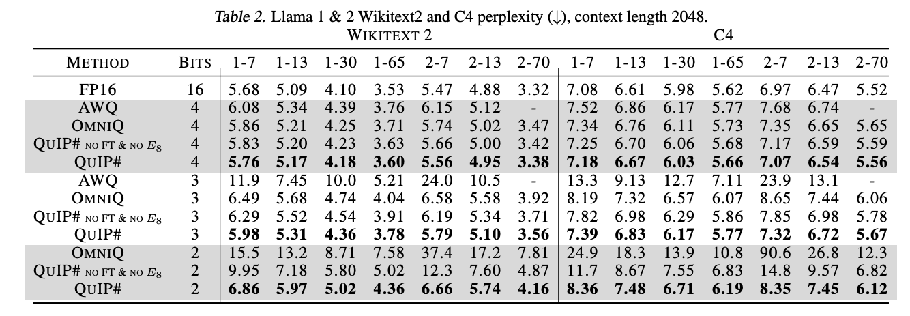
It's worth noting that the perplexity gains over AQLM are only realised if you use both the lattice codebook and finetune.
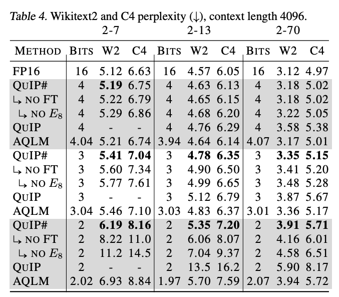
As is often the case, low perplexity doesn't always translate to better zero-shot performance on typical QA tasks, although it looks as though QuIP# stands up well in many cases.
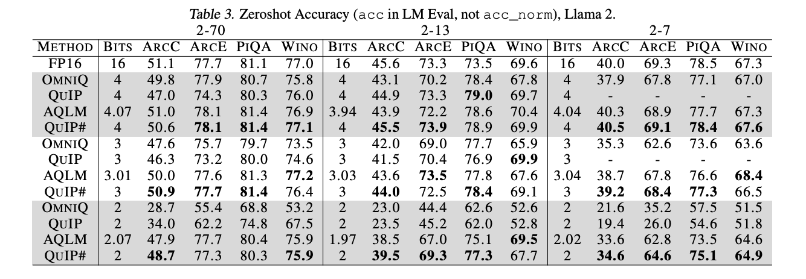
In terms of practical speed-ups that can be gained from using this, a lot seems to depend on how efficiently the Randomized Hadamard transform and lookups into the E8-lattice can be implemented. Both are memory bandwidth bound operations, but might also be difficult to achieve peak bandwidth. Notably, the authors don't publish #tokens/sec for their eye-catching 3-bit compression scenario, only 2- and 4-bit.
Takeaways
This is a compelling proof-of-concept that 3-bit compression can be effective work. Concurrent work also seems to suggest that vector quantisation is critical for sub 4-bit compression, although it remains to be seen how practical speedups can be realised (even in other works). It is also worth noting that GPTVQ (published within the last week) appears to obtain better 3-bit perplexity results for larger models than QuIP#. This promises to be an exciting race to find the best schemes with suggestions for how future low-precision hardware might look!
Speculative Streaming: Fast LLM Inference without Auxiliary Models
The key idea
Speculative decoding is great for speeding up LLM inference, but has the downside of requiring a well-aligned external draft model. Speculative streaming addresses this by modifying a model to produce its own tree of draft tokens in one parallel inference step.
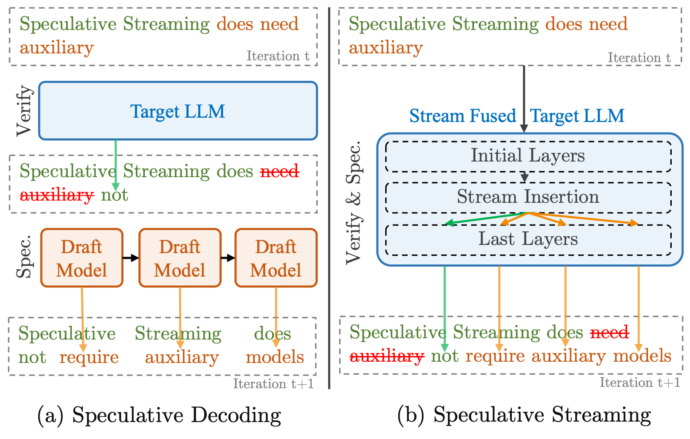
Background
Over the last year, speculative decoding (or speculative sampling) has become popular for LLM inference. This works by using a smaller draft model alongside the main target model, whose job it is to generate a sequence of draft tokens at each step. The target model then verifies those proposed tokens (checking to see if they are sufficiently aligned with its own probability model) and accepts them up to some point in the draft sequence. Accepted tokens become part of the "true" output of the model and rejected ones are disposed of.
This process has two crucial properties that make it appealing:
- The target model can verify draft tokens in parallel. This makes it more efficient than typical token-by-token generation.
- Due to some neat maths, the accept/reject process means that the distribution of the tokens is exactly that of the target model. I.e. there is no degradation when using speculative decoding!
However, off-the-shelf draft models can give quite different predictions to the target model so often need fine-tuning for alignment, and running two models simultaneously can be complex and memory-intensive.
Their method
The authors address this by adapting existing models and fine-tuning, such that the model can generate its own draft tokens.
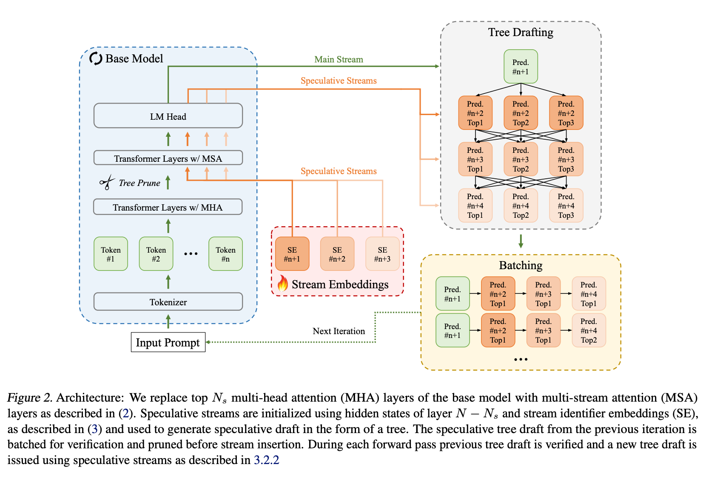
This is done via a process of parallel pruning, speculation and verification. This can be a little tricky to understand, as each inference step is now doing three things: verifying the previous draft tokens, generating a new token after the draft sequence, and generating the next draft tokens. It works as follows:
Each iteration takes as input the sequence so far, along with a (flattened) tree of draft tokens. A special pruning layer in the middle of the network uses the final embedding layer to generate an early prediction of which trees look promising, dropping low-probability branches. This is followed by a stream embedding layer, which uses the regular tokens' hidden state to generate a set of hidden states for a tree of "new" draft tokens.
These new draft tokens are processed in the usual way until the end of the network, where the model uses the standard speculative decoding accept/reject sampling to decide which "input" draft tokens to accept. The "new" draft tokens generated for that branch then become the "input" draft tokens for the next iteration.
Results
Speculative streaming is substantially faster than regular auto-regressive inference, and is marginally faster than the competing Medusa method (which also adapts a single model to produce a draft) but uses many fewer additional parameters.
The comparison against standard speculative decoding is harder. Their empirical results show a 2x speedup, but depend on various practical considerations and hyperparameters. More useful is their theoretical analysis showing the regimes in which speculative streaming should give a speedup. There are clearly circumstances in which it's beneficial, though this heavily depends on the relative quality of the draft models:
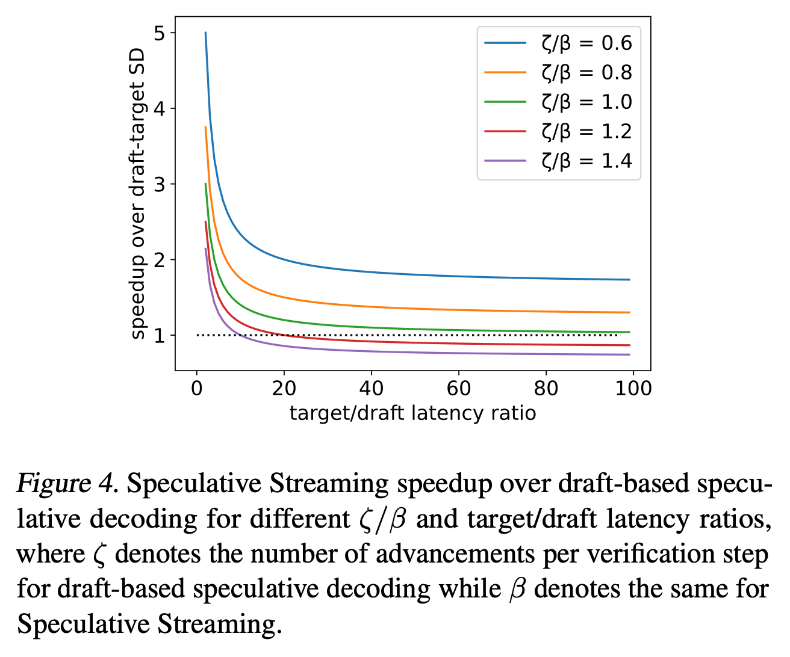
Takeaways
This is a really neat paper, even if it feels like a bit of a "hack" in the context of auto-regressive LLMs. Predicting multiple tokens in parallel is not really something that LLMs should excel at, and they only get away with it here because of the speculative setting. But because it allows a single model to do both draft and target modeling in a single step, it appears to be worthwhile.
Given all that, their execution of the idea is great. The authors are clearly concerned with making this work in practical settings, which is reflected by their addition of tricks like tree pruning. The results look promising, though it remains to be seen which areas of their speedup-modeling correspond to practical use-cases, which will ultimately determine how widely speculative streaming is used.
FP6-LLM: Efficiently Serving Large Language Models Through FP6-Centric Algorithm-System Co-Design
The key idea
Post training quantisation of LLMs can reduce the cost of inference as models are typically memory bound. Compressing the weights of the model into lower precision reduces the burden of memory transfers. Currently there is no good hardware support for post-training quantisation in non-power-of-2 bits and the authors propose a full stack GPU kernel for floating-point weights of various bit widths (e.g. FP6). The authors follow on from previous work showing that FP6 can be used without a noticeable drop in accuracy. They provide an end-to-end inference pipeline for FP6 training and using this, show a substantial speedup on the FP8 baseline for a variety of models.
Their method
The main challenges in quantising to non-power-of-2 values is that GPU registers are generally designed to read at the granularity of 32-bit words. To read 6-bit weights this means a large fraction of the memory read will be unused and therefore wasted. To solve this problem the authors propose a method of ahead-of-time bit-level pre-packing. In which you can combine the memory read of every 32 x-bit weights, resulting in x requests of 4-byte words per GPU thread. In this case, all the memory access would be aligned at the granularity of 32-bit words rather than irregular bit width. In order to do this is it required to rearrange the weights in memory but it is only required to do this once and this cost can be amortised over many inference calls.
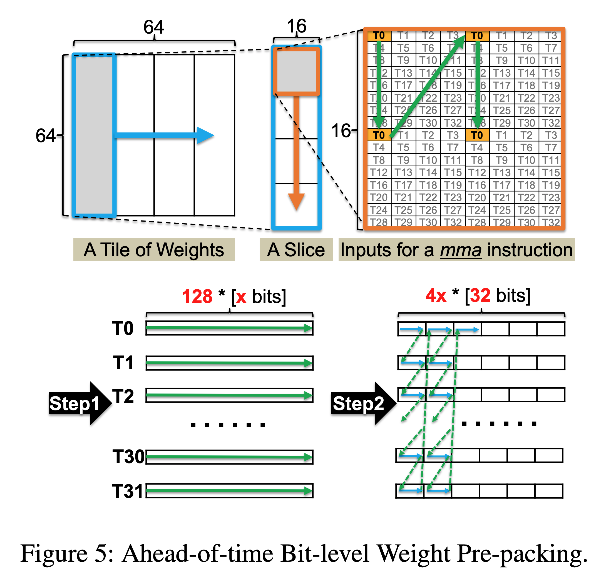
The other challenge the authors face is how to best hide the latency of the FP-x to FP16 cast during dequantisation. They leverage parallelism by using the SIMT cores to do the dequantisation while the Tensor Cores run the model. Furthermore, they can dequantise multiple FP-x weights in parallel due to the bit level parallelism within each 32 bit register, reducing SIMT overhead by 4x.
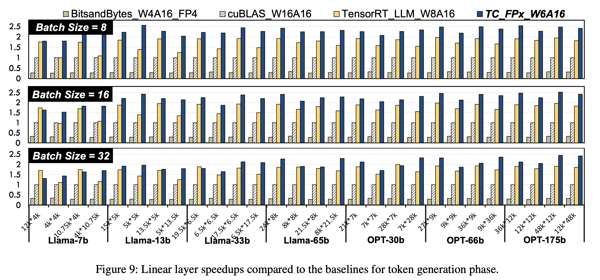
Results
Evaluation is conducted with reference to an FP16 base model and quantised FP8 model. They show consistent speedups over these models by around 2.2x and 1.3x respectively. Furthermore quantising to FP6 allows LLaMA-70B to be deployed using only a single GPU, achieving a speedup of 1.69-2.65x the FP16 baseline. Overall we think this is a promising method to break the hardware lock of quantising to powers of 2 and allow more flexible and efficient LLM inference.
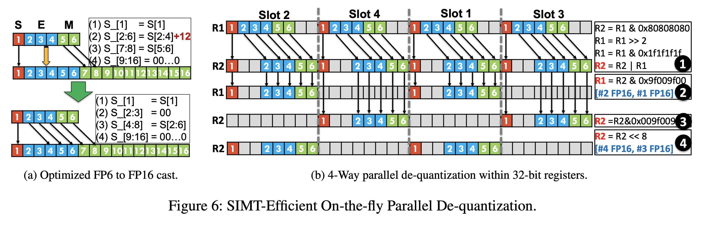